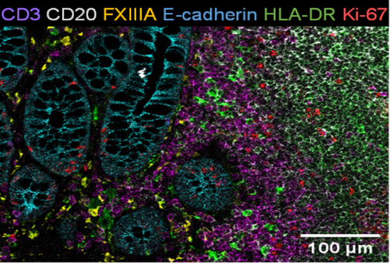
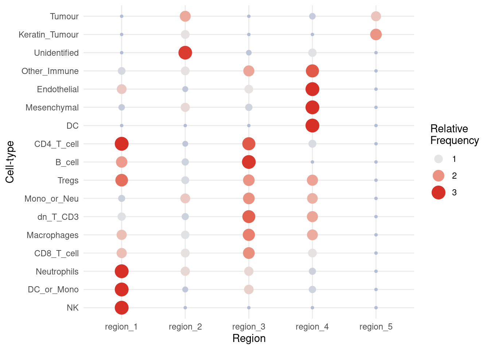

# load required packages
library(lisaClust)
library(spicyR)
library(ggplot2)
library(SingleCellExperiment)
library(SpatialDatasets)5 Spatial domains
5.1 Why look at spatial domains?
Beyond spatial relationships between cell types, imaging datasets also contain another source of rich information - spatial domains. To give an idea of what spatial domains might visually look like, we’ve provided an image on the right, where we can clearly map out our healthy epithelial tissue spatial domain on the left of the image, and our immune and tumour domains on the right of the image. 
However, spatial domains tend to be highly dependent on the biological question being answered. For example, when your primary tissue of interest are solid tumours, spatial domain analysis can provide insights into proportion of tumour domain vs immune domains, or how tumour domains differ between progressive and non-progressive cancers. Alternatively, if your primary tissue of interest is diabetes, spatial domains can provide insights into marker or cell type differences in your pancreatic islets.
In this section, we’ll be exploring the use of lisaClust on two different datasets to help inform
5.2 lisaClust
Clustering local indicators of spatial association (LISA) functions is a methodology for identifying consistent spatial organisation of multiple cell-types in an unsupervised way. This can be used to enable the characterization of interactions between multiple cell-types simultaneously and can complement traditional pairwise analysis. In our implementation our LISA curves are a localised summary of an L-function from a Poisson point process model. Our framework lisaClust can be used to provide a high-level summary of cell-type colocalization in high-parameter spatial cytometry data, facilitating the identification of distinct tissue compartments or identification of complex cellular microenvironments.
5.2.1 How lisaClust works
The workflow that lisaClust uses to identify regions of tissue with similar localisation patterns of cells contains multiple key steps. First, cells are treated as objects and assigned coordinates in an x-y space. Second, distances between all cells are calculated and then, by modeling the cells as a multi-type Poisson point process, the distances are used to calculate local indicators of spatial association (LISA). These LISA curves summarize the spatial association between each cell and a specific cell type over a range of radii, r. The LISA curves are calculated for each cell and cell type and then clustered to assign a region label for each cell.
5.2.2 Case study: Keren
We will start by reading in the data from the SpatialDatasets package as a SingleCellExperiment object. Here the data is in a format consistent with that outputted by CellProfiler.
kerenSPE <- SpatialDatasets::spe_Keren_2018()see ?SpatialDatasets and browseVignettes('SpatialDatasets') for documentationloading from cache5.2.2.1 Generate LISA curves
This data includes annotation of the cell-types of each cell. Hence, we can move directly to performing k-means clustering on the local indicators of spatial association (LISA) functions using the lisaClust function, remembering to specify the imageID, cellType, and spatialCoords columns in colData. For the purpose of demonstration, we will be using only images 5 and 6 of the kerenSPE dataset.
kerenSPE <- kerenSPE[,kerenSPE$imageID %in% c("5", "6")]
kerenSPE <- lisaClust(kerenSPE,
k = 5
)Generating local L-curves.These regions are stored in colData and can be extracted.
colData(kerenSPE)[, c("imageID", "region")] |>
head(20)DataFrame with 20 rows and 2 columns
imageID region
<character> <character>
21154 5 region_3
21155 5 region_3
21156 5 region_3
21157 5 region_1
21158 5 region_1
... ... ...
21169 5 region_1
21170 5 region_1
21171 5 region_4
21172 5 region_1
21173 5 region_45.2.2.2 Examine cell type enrichment
lisaClust also provides a convenient function, regionMap, for examining which cell types are located in which regions. In this example, we use this to check which cell types appear more frequently in each region than expected by chance.
Here, we clearly see that healthy epithelial and mesenchymal tissue are highly concentrated in region 1, immune cells are concentrated in regions 2 and 4, whilst tumour cells are concentrated in region 3.
We can further segregate these cells by increasing the number of clusters, i.e., increasing the parameter k = in the lisaClust() function. For the purposes of demonstration, let’s take a look at the hatchingPlot of these regions.
regionMap(kerenSPE,
type = "bubble"
)
5.2.2.3 Plot identified regions
Finally, we can use hatchingPlot to construct a ggplot object where the regions are marked by different hatching patterns. This allows us to visualize the 5 regions and 17 cell-types simultaneously.
hatchingPlot(kerenSPE, nbp = 300)Concave windows are temperamental. Try choosing values of window.length > and < 1 if you have problems.Warning in split.default(x = seq_len(nrow(x)), f = f, drop = drop, ...): data
length is not a multiple of split variable
Warning in split.default(x = seq_len(nrow(x)), f = f, drop = drop, ...): data
length is not a multiple of split variable5.3 sessionInfo
sessionInfo()R version 4.4.1 (2024-06-14)
Platform: x86_64-pc-linux-gnu
Running under: Debian GNU/Linux 12 (bookworm)
Matrix products: default
BLAS: /usr/lib/x86_64-linux-gnu/openblas-pthread/libblas.so.3
LAPACK: /usr/lib/x86_64-linux-gnu/openblas-pthread/libopenblasp-r0.3.21.so; LAPACK version 3.11.0
locale:
[1] LC_CTYPE=C.UTF-8 LC_NUMERIC=C LC_TIME=C.UTF-8
[4] LC_COLLATE=C.UTF-8 LC_MONETARY=C.UTF-8 LC_MESSAGES=C.UTF-8
[7] LC_PAPER=C.UTF-8 LC_NAME=C LC_ADDRESS=C
[10] LC_TELEPHONE=C LC_MEASUREMENT=C.UTF-8 LC_IDENTIFICATION=C
time zone: Australia/Sydney
tzcode source: system (glibc)
attached base packages:
[1] stats4 stats graphics grDevices utils datasets methods
[8] base
other attached packages:
[1] SpatialDatasets_1.4.0 SpatialExperiment_1.16.0
[3] ExperimentHub_2.14.0 AnnotationHub_3.14.0
[5] BiocFileCache_2.14.0 dbplyr_2.5.0
[7] SingleCellExperiment_1.28.1 SummarizedExperiment_1.36.0
[9] Biobase_2.66.0 GenomicRanges_1.58.0
[11] GenomeInfoDb_1.42.0 IRanges_2.40.0
[13] S4Vectors_0.44.0 BiocGenerics_0.52.0
[15] MatrixGenerics_1.18.0 matrixStats_1.4.1
[17] ggplot2_3.5.1 spicyR_1.18.0
[19] lisaClust_1.14.4
loaded via a namespace (and not attached):
[1] RColorBrewer_1.1-3 rstudioapi_0.17.1
[3] jsonlite_1.8.9 MultiAssayExperiment_1.32.0
[5] magrittr_2.0.3 spatstat.utils_3.1-1
[7] magick_2.8.5 farver_2.1.2
[9] nloptr_2.1.1 rmarkdown_2.29
[11] zlibbioc_1.52.0 vctrs_0.6.5
[13] memoise_2.0.1 minqa_1.2.8
[15] spatstat.explore_3.3-3 rstatix_0.7.2
[17] htmltools_0.5.8.1 S4Arrays_1.6.0
[19] curl_6.0.0 broom_1.0.7
[21] SparseArray_1.6.0 Formula_1.2-5
[23] htmlwidgets_1.6.4 plyr_1.8.9
[25] cachem_1.1.0 mime_0.12
[27] lifecycle_1.0.4 pkgconfig_2.0.3
[29] Matrix_1.7-0 R6_2.5.1
[31] fastmap_1.2.0 GenomeInfoDbData_1.2.13
[33] digest_0.6.37 numDeriv_2016.8-1.1
[35] colorspace_2.1-1 AnnotationDbi_1.68.0
[37] tensor_1.5 RSQLite_2.3.7
[39] ggpubr_0.6.0 labeling_0.4.3
[41] filelock_1.0.3 fansi_1.0.6
[43] spatstat.sparse_3.1-0 httr_1.4.7
[45] polyclip_1.10-7 abind_1.4-8
[47] mgcv_1.9-1 compiler_4.4.1
[49] bit64_4.5.2 withr_3.0.2
[51] backports_1.5.0 BiocParallel_1.40.0
[53] carData_3.0-5 DBI_1.2.3
[55] ggupset_0.4.0 ggforce_0.4.2
[57] coxme_2.2-22 ggsignif_0.6.4
[59] MASS_7.3-61 concaveman_1.1.0
[61] rappdirs_0.3.3 DelayedArray_0.32.0
[63] rjson_0.2.23 tools_4.4.1
[65] goftest_1.2-3 glue_1.8.0
[67] nlme_3.1-165 grid_4.4.1
[69] ClassifyR_3.10.0 reshape2_1.4.4
[71] generics_0.1.3 gtable_0.3.6
[73] spatstat.data_3.1-2 class_7.3-22
[75] tidyr_1.3.1 data.table_1.16.2
[77] car_3.1-3 utf8_1.2.4
[79] XVector_0.46.0 spatstat.geom_3.3-3
[81] BiocVersion_3.20.0 pillar_1.9.0
[83] stringr_1.5.1 splines_4.4.1
[85] dplyr_1.1.4 tweenr_2.0.3
[87] lattice_0.22-6 survival_3.7-0
[89] bit_4.5.0 deldir_2.0-4
[91] tidyselect_1.2.1 Biostrings_2.74.0
[93] knitr_1.49 V8_6.0.0
[95] xfun_0.49 pheatmap_1.0.12
[97] fftwtools_0.9-11 scam_1.2-17
[99] stringi_1.8.4 UCSC.utils_1.2.0
[101] yaml_2.3.10 boot_1.3-30
[103] evaluate_1.0.1 codetools_0.2-20
[105] tibble_3.2.1 BiocManager_1.30.25
[107] cli_3.6.3 munsell_0.5.1
[109] Rcpp_1.0.13-1 spatstat.random_3.3-2
[111] png_0.1-8 bdsmatrix_1.3-7
[113] spatstat.univar_3.1-1 parallel_4.4.1
[115] ggh4x_0.2.8 blob_1.2.4
[117] lme4_1.1-35.5 ggthemes_5.1.0
[119] lmerTest_3.1-3 scales_1.3.0
[121] purrr_1.0.2 crayon_1.5.3
[123] rlang_1.1.4 KEGGREST_1.46.0